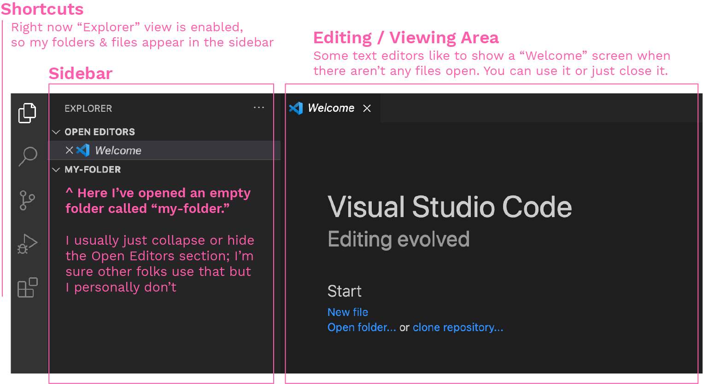
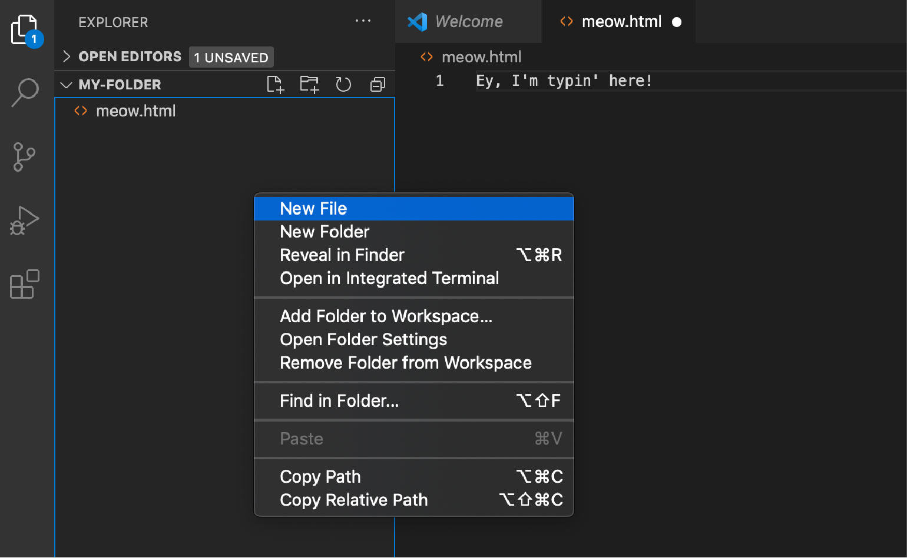
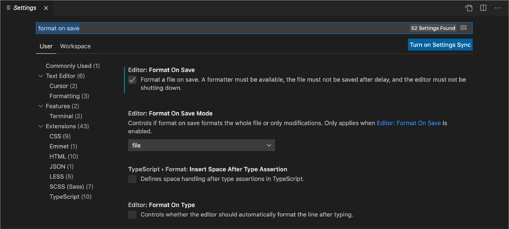

Intro to Development Tools
Text Editor Basics
Prerequisites:
As review, a "text editor" refers to an application on your computer that is specifically designed to help you write code. Since code is really just textual instructions for your computer, you end up just using it, quite literally, to edit text in files.
I'll be using VS Code to demonstrate some of these basics, but the functionality should be quite similar in Atom, Sublime Text, and other options as well.
Opening files
The first step when using a text editor is usually to open some files. Just like a lot of other programs, you can go to File > Open and click on the item you'd like to view.
More often than not when writing code, however, you want to be able to quickly view and edit many files in a short amount of time. In a typical web application project, you might have hundreds or even thousands of files! It would be pretty inconvenient to have to visit the Open File menu every single time.
To make things easier, you can open an entire folder in your text editor instead of a single file.

To create a file inside the folder, now you can just ctrl+click (or right click) on the sidebar to get a quick action menu, and select "New File." This is also an easy way to rename, delete, or move your files and folders.

Once you've created files (or if you open a folder with pre-existing files), you can just click on a filename in the sidebar to open it in the main Editing / Viewing area.
Naming your files
The "file extension" is the last part of your filename, from the final dot. So in dog.html, "html" is the extension, and in super-dog.test.js, "js" is the extension.
This is important to know because that's how you tell your computer which coding language you're using in that file (.html ending means the file is in HTML, and .js means it's in JavaScript). You can edit this extension at any point by simply renaming the file.
The rest of the filename is up to you. You'll notice that a lot of developers use some basic patterns like all lowercase with dashes (happy-birthday-to-you.html) or sometimes all caps with underscores (SECRET_CODE.js). These are really just stylistic choices now*. You can name files using emoji, spaces, any capitalization, unicode symbols - whatever you like!
*There are historical reasons - spaces in filenames causing errors - and logistical reasons - it can be confusing if you have the same filename but one is capitalized and one is not. But those are choices, not requirements.
Saving your files
As a programmer, my most commonly used keyboard shortcut has to be command+S for saving. I learned the hard way (not just once!) not to make a lot of changes without saving my work, so now I save nearly every line I edit.
In addition to using the save shortcut, a very useful tool when coding is auto-formatting. Navigate to your text editor's Preferences or Settings menu to find this option.

"Formatting" here refers to things like adjusting the indentation and spacing to make things look neater.
I like to enable "format on save" instead of "format on type" because it can feel a bit jarring when things are moving around as you type. This is entirely an optional tool, though.
If you have any trouble finding this setting for your text editor, search online for "format on save [your-text-editor's-name]" (ex. "format on save Atom") and you'll easily find steps to turn that on.